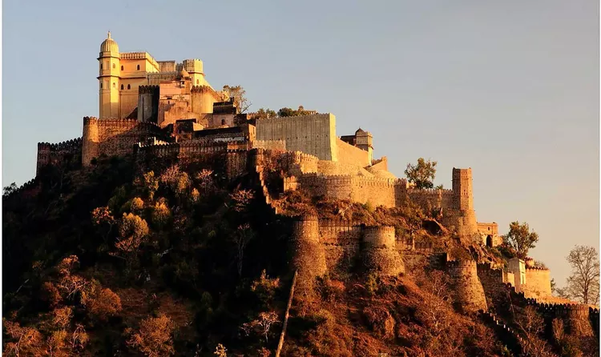
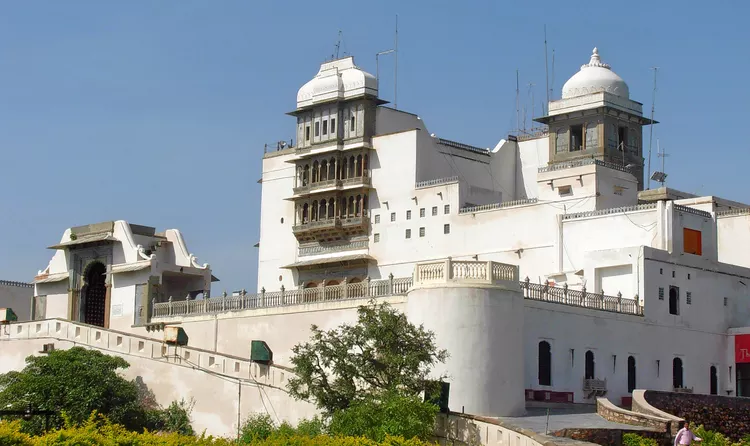
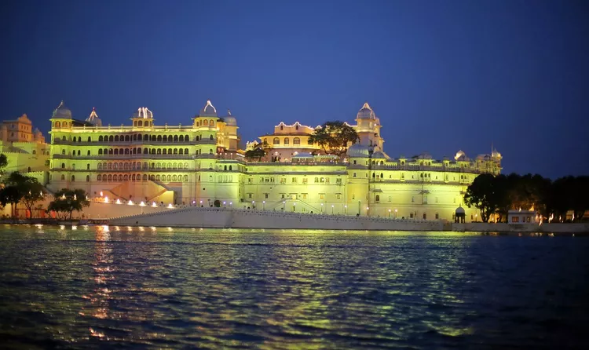
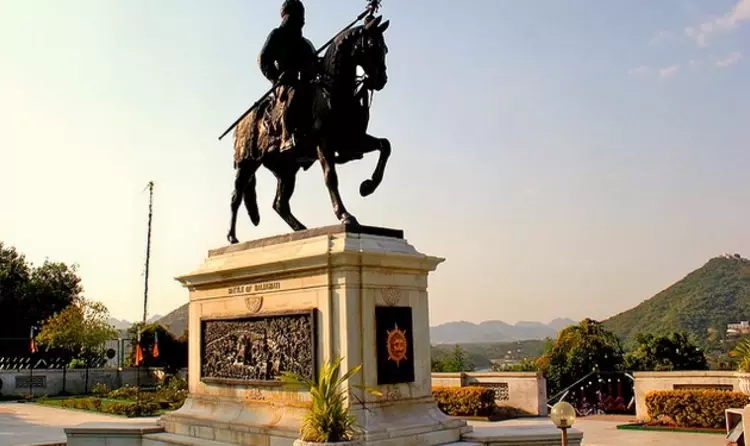

Lake Pichola is one of the most popular tourist places in Rajasthan. It is an artificial lake which has been named after the Picholi village and was created in 1362 AD. It is one of the several contiguous lakes in Udaipur, which were primarily developed to meet the irrigation and drinking requirements of the local people.
Your Udaipur trip plan will be perfect with a visit to Lake Pichola, and will surely give you some picture moments.
Udaipur~ The City of Lakes
Udaipur is a vibrant amalgamation of the old and the new. The capital of the royal state of Rajasthan, Jaipur has been ruled by Rajput kingdoms for many centuries and developed as a planned city in the 17th century AD. Along with Delhi and Agra, Jaipur forms the Golden Triangle, one of the most famous tourist circuits of the country.
Majestic buildings, tales of heroic battles, resplendent forts and palaces, and multi-faceted characters, Jaipur has long been one of the shiniest cultural jewels in the history of the Indian subcontinent. With friendly people known for their hospitality, Jaipur offers a plethora of options for travellers.
Majestic buildings, tales of heroic battles, resplendent forts and palaces, and multi-faceted characters, Jaipur has long been one of the shiniest cultural jewels in the history of the Indian subcontinent. With friendly people known for their hospitality, Jaipur offers a plethora of options for travellers.
TRADITIONS OF UDAIPUR:
Once an integral part of the most powerful province in India, Jaipur, popularly known as 'The Pink City' can undoubtedly boast of embracing modernity while maintaining traditional values. An extremely well-organised city planned according to the principles of Vastu Shastra and Shilpa Shastra, Jaipur weaves a sense of royalty and grandeur equipped with its vibrancy and charm.
The city is a visual treat for tourists with its beautiful palaces, forts, and lakes, the architecture of which highlights the influence of Mughals in the Rajput empire. The brilliant architectural plans of the centuries old constructions like the Jantar Mantar is one of the reasons for Jaipur's popularity. From the Hawa Mahal to the numerous forts, each corner of Jaipur provides evidence of a strong historical background and will undoubtedly transport tourists to the majestic era of the Rajputs.
RESTAURANTS AND LOCAL FOOD:
Jaipur is undoubtedly one of the most popular destinations for foodies. It is the capital of the state in more than one sense. You will find outlets of various cuisines and will never run out of options in the sparkling city. However, the most colourful here will be the local cuisine where a number of traditional dishes and desserts flourish. These preparations are relished daily by the locals and leave most tourist fascinated. Influenced by the Maharajas and Maharanis each element in a traditional Rajasthani thali has a story of its own.
A trip to Jaipur is thereby incomplete without digging into grand dishes like the Dal Bati Churma, desserts like Imarti and Ghevar and of course the famous chaat. Jaipuri cuisine itself symbolizes the beauty, dignity, and richness of Rajasthan. Some of the dishes that you can't miss in Jaipur include Dal Bati Churma, Missi Roti, Bajre ki Roti, Mirchi Bada, Gatte ki Sabji and Kadhi.The desserts here are very popular and it is almost imperative that you let your taste buds experience these unique dishes. These include Ghevar, Imarti, Halwa, Choorma, Gajak, Moong Thal and more.
Once an integral part of the most powerful province in India, Jaipur, popularly known as 'The Pink City' can undoubtedly boast of embracing modernity while maintaining traditional values. An extremely well-organised city planned according to the principles of Vastu Shastra and Shilpa Shastra, Jaipur weaves a sense of royalty and grandeur equipped with its vibrancy and charm.
The city is a visual treat for tourists with its beautiful palaces, forts, and lakes, the architecture of which highlights the influence of Mughals in the Rajput empire. The brilliant architectural plans of the centuries old constructions like the Jantar Mantar is one of the reasons for Jaipur's popularity. From the Hawa Mahal to the numerous forts, each corner of Jaipur provides evidence of a strong historical background and will undoubtedly transport tourists to the majestic era of the Rajputs.
RESTAURANTS AND LOCAL FOOD:
Jaipur is undoubtedly one of the most popular destinations for foodies. It is the capital of the state in more than one sense. You will find outlets of various cuisines and will never run out of options in the sparkling city. However, the most colourful here will be the local cuisine where a number of traditional dishes and desserts flourish. These preparations are relished daily by the locals and leave most tourist fascinated. Influenced by the Maharajas and Maharanis each element in a traditional Rajasthani thali has a story of its own.
A trip to Jaipur is thereby incomplete without digging into grand dishes like the Dal Bati Churma, desserts like Imarti and Ghevar and of course the famous chaat. Jaipuri cuisine itself symbolizes the beauty, dignity, and richness of Rajasthan. Some of the dishes that you can't miss in Jaipur include Dal Bati Churma, Missi Roti, Bajre ki Roti, Mirchi Bada, Gatte ki Sabji and Kadhi.The desserts here are very popular and it is almost imperative that you let your taste buds experience these unique dishes. These include Ghevar, Imarti, Halwa, Choorma, Gajak, Moong Thal and more.
PLACES TO VISIT
01 LAKE PICHOLA

02 CITY PALACE

The City Palace is situated in Jaipur in the midst of the retrospective city wall. City Palace is one of the best Tourist Places In Rajasthan delineating marvellous sightseeing views. A true heaven representing art and history, this place is a perfect destination to visit and take happy and memorable moments back home.
03 KUMBALGARH FORT

The Kumbhalgarh Fort is situated in the Rajsamand district of Rajasthan. The fort is best known as the birthplace of one of the greatest warriors of India, Maharana Pratap. The fort was built during the course of the 15th century, and further additions were made to it in the 19th century.
The fort is now open to the public and is lit up in decorative lights every evening for a few minutes. The Kumbhalgarh Fort is the next most important fort in Mewar after the Chittorgarh Fort. The fort was built by Rana Kumbha and his dynasty, which belonged to the Sisodia clan of Rajputs.
04 SAJJAN GARH PALACE

The breathtaking view from Sajjangarh Palace is customarily called the Monsoon Palace. This place calls for one of the best places to visit in Delhi.
Perched on the peak of the hilltop in the midst of the sanctuary, the retrospective one hundred and thirty-two-year-old palace is cherished by the tourists at large.
05 FATEH PRAKASH PALACE

The Fateh Prakash Palace is a great choice for visitors. It was built in the early 20th century and is named after Maharana Fateh Prakash, who was the king during the construction of the palace. The palace was used as a venue by the kings in earlier days and has now been converted into a hotel. The palace is still owned by the Mewar Royal Family of Udaipur.
The Fateh Prakash Palace has won five tourism awards in the ‘Heritage Grand’ category and is one of the two authentic palace hotels in the Udaipur City Palace Complex. The palace’s counterpart is called the Shiv Niwas Palace Hotel which is quite popular with tourists visiting Udaipur.
06 HALDI GHATI

Haldi Ghati is a very popular tourist place in Rajasthan. It is a mountain pass in the Aravalli Range and connects the Rajsamand and the Pali districts. The pass gets its name due to its yellow coloured soil, which has been compared to the colour of turmeric.